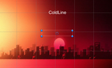

Introdcution To ColdLine
The game is a top-down 2D action game. Inspiration for gameplay is based on the Hotline Miami games. The gameplay is fast passed where the player starts with no weapon and will have to attack enemies in melee. The player can pick put a gun that is in each level which they can use to clear the level with. The player’s goal is to kill all enemies in the level to achieve victor. The level will automatically restart on the players death. The player has dash ability to help them move through out the level. On eliminating all enemies in the first level the second level will start, after complication of the second level the player has complete the game.